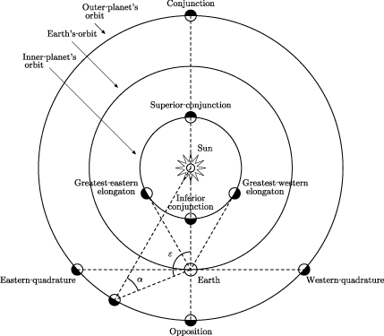

Certains platistes avancent l'idée selon laquelle la Terre, en forme de disque, serait entourée d'un énorme mur de glace afin que nous ne puissions pas tomber dans le vide une fois arrivés à la limite de la planète. Ces derniers vont encore plus loin en expliquant que les gouvernements nous cachent la vérité (à savoir que la Terre est plate) en affirmant que personne sur Terre n'a jamais traversé tout l'Antarctique.Or c'est faux ! Nombreux sont ceux qui se sont aventurés dans la traversée de l'Antarctique. Certes, le faire sans aucune aide est un véritable défi mais prenons par exemple le Pôle Sud de l'Inaccessibilité, le point de l'Antarctique le plus éloigné de toute côte. On y trouve une station de radio, un ancien laboratoire de recherche soviétique ainsi qu'un vieux buste de Lénine..
Le Youtubeur et théoricien D. Marble a déjà demandé : si la Terre est ronde, alors comment se fait-il que nous pouvons voir des planètes entre la Terre et le Soleil la nuit ? Autrement dit, ce trentenaire se demande comment il est possible de voir Vénus et Mercure en pleine nuit. C'est un peu de la mauvaise foi car, même si on peut distinguer ces deux planètes au lever et au coucher du soleil, celles-ci ne sont tout simplement pas toujours placées entre nous et le Soleil. Pour rappel, toutes les planètes ne sont pas parfaitement alignées et se trouvent sur une orbite différente à une vitesse différente !

Enfin, l'un des arguments avancés par ceux qui soutiennent la théorie de la Terre plate concerne les rayons du Soleil au crépuscule. Selon eux, le Soleil ne se trouve pas à 150 millions de kilomètres de chez nous. Il serait plus petit que ce que l'on nous dit et plus proche. Si c'était le cas, les rayons devraient être parallèles quand on peut les voir au crépuscule et non pas nous arriver sous formes de raies lumineuses divergentes quand ils traversent des zones ombragées. Pas de chance pour les platistes, les rayons du Soleil sont bien parallèles ! Il ne s'agit que d'une illusion d'optique ! Tout est une question de distance et de perspective. Faites l'expérience au bord d'une route : vous voyez les deux lignes de chaque côté qui sont parfaitement parallèles. Si vous vous mettez au milieu de la route et regardez là au loin, elle semble devenir de plus en plus petite ... C'est la même chose avec les rayons du Soleil.